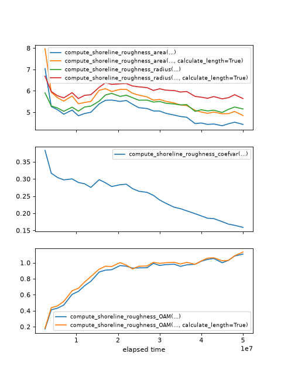

Comparing shoreline roughness metrics¶
Compare the various approaches to measuring the concept of shoreline roughness.
For functions that depend on the “shoreline length”, the result is computed using both the count of shoreline pixels in a ShorelineMask, and using the compute_shoreline_length function.
import matplotlib.pyplot as plt
import numpy as np
import sandplover as spl
from sandplover.plan import compute_shoreline_roughness_area
from sandplover.plan import compute_shoreline_roughness_coefvar
from sandplover.plan import compute_shoreline_roughness_radius
from sandplover.plan import compute_shoreline_roughness_OAM
golf = spl.sample_data.golf()
origin = np.array([golf.meta["L0"].data, golf.meta["CTR"].data]) * golf.meta["dx"].data
time_idxs = np.linspace(5, golf.shape[0] - 1, num=30, dtype=int)
roughness_area = np.zeros(len(time_idxs)) # default is caclulating
roughness_area_calc = np.zeros(len(time_idxs))
roughness_var = np.zeros(len(time_idxs))
roughness_radius = np.zeros(len(time_idxs)) # default is counting
roughness_radius_calc = np.zeros(len(time_idxs))
roughness_oam = np.zeros(len(time_idxs)) # default is counting
roughness_oam_calc = np.zeros(len(time_idxs))
for t, time_idx in enumerate(time_idxs):
# make masks
em = spl.mask.ElevationMask(
golf["eta"][time_idx, :, :], elevation_threshold=0, elevation_offset=-0.5
)
em.trim_mask(length=golf.meta["L0"].data + 1, value=1)
oam = spl.plan.OpeningAnglePlanform.from_mask(em)
sm = spl.mask.ShorelineMask.from_Planform(oam, contour_threshold=75)
sm45 = spl.mask.ShorelineMask.from_Planform(oam, contour_threshold=45)
sm120 = spl.mask.ShorelineMask.from_Planform(oam, contour_threshold=120)
lm = spl.mask.LandMask.from_Planform(oam, contour_threshold=75)
sm.trim_mask(length=golf.meta["L0"].data + 1)
sm45.trim_mask(length=golf.meta["L0"].data + 1)
sm120.trim_mask(length=golf.meta["L0"].data + 1)
lm.trim_mask(length=golf.meta["L0"].data + 1)
if np.sum(sm.mask) > 0 and np.sum(lm.mask) > 0:
# compute roughness area
roughness_area[t] = compute_shoreline_roughness_area(sm, lm)
roughness_area_calc[t] = compute_shoreline_roughness_area(
sm, lm, calculate_length=True
)
# compute roughness as coef of variation
roughness_var[t] = compute_shoreline_roughness_coefvar(sm, origin=origin)
# compute Liang roughness
roughness_radius[t] = compute_shoreline_roughness_radius(sm, origin=origin)
roughness_radius_calc[t] = compute_shoreline_roughness_radius(
sm, origin=origin, calculate_length=True
)
# compute roughness using OAMs
roughness_oam[t] = compute_shoreline_roughness_OAM(sm45, sm120)
roughness_oam_calc[t] = compute_shoreline_roughness_OAM(
sm45, sm120, calculate_length=True
)
times = golf.t[time_idxs]
fig, ax = plt.subplots(3, 1, figsize=(6, 8), sharex=True)
ax[0].plot(times, roughness_area, label="compute_shoreline_roughness_area(...)")
ax[0].plot(
times,
roughness_area_calc,
label="compute_shoreline_roughness_area(..., calculate_length=True)",
)
ax[0].plot(times, roughness_radius, label="compute_shoreline_roughness_radius(...)")
ax[0].plot(
times,
roughness_radius_calc,
label="compute_shoreline_roughness_radius(..., calculate_length=True)",
)
ax[1].plot(times, roughness_var, label="compute_shoreline_roughness_coefvar(...)")
ax[2].plot(times, roughness_oam, label="compute_shoreline_roughness_OAM(...)")
ax[2].plot(
times,
roughness_oam_calc,
label="compute_shoreline_roughness_OAM(..., calculate_length=True)",
)
ax[0].legend(fontsize=8)
ax[1].legend(fontsize=8)
ax[2].legend(fontsize=8)
ax[2].set_xlabel("elapsed time")
plt.show()
(Source code, png, hires.png)
{kind=link}
{kind=link}
